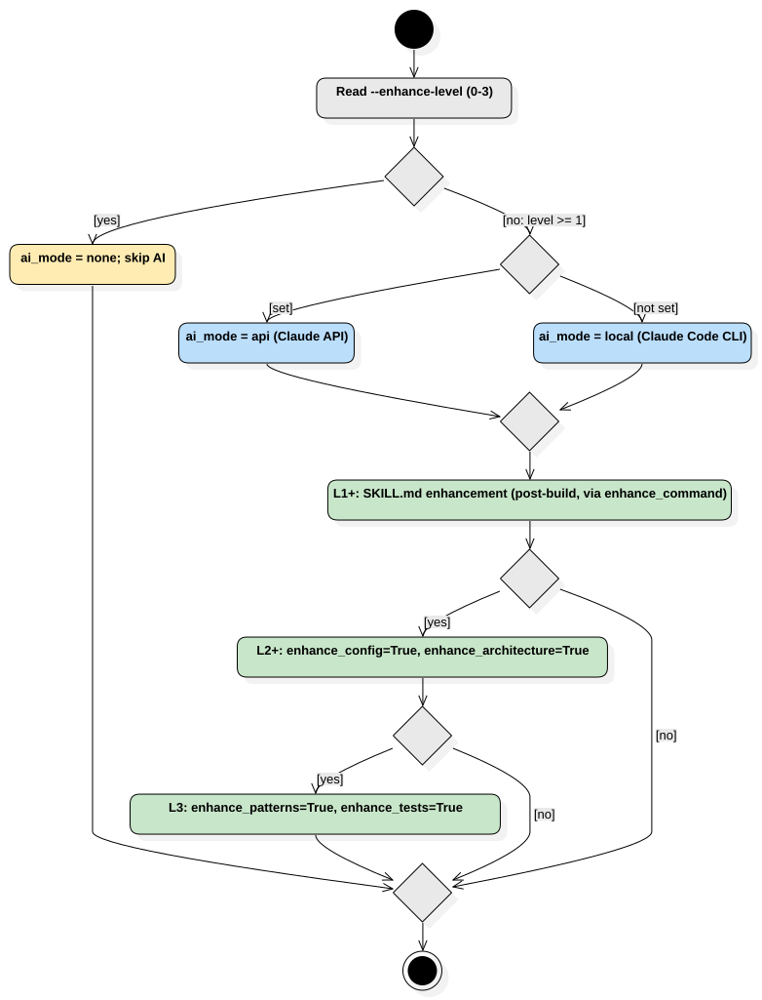

Enhancement Pipeline Activity
UMLActivity
Skill Seekers
::
skill_seekers
::
Enhancement Pipeline Activity
Description
none
Diagrams

18 Enhancement Pipeline
Nodes
start
Read --enhance-level (0-3)
level == 0?
ai_mode = none; skip AI
ANTHROPIC_API_KEY?
ai_mode = api (Claude API)
ai_mode = local (Claude Code CLI)
mode set
L1+: SKILL.md enhancement (post-build, via enhance_command)
level >= 2?
L2+: enhance_config=True, enhance_architecture=True
level >= 3?
L3: enhance_patterns=True, enhance_tests=True
done
end
Edges
(start→Read --enhance-level (0-3))
(Read --enhance-level (0-3)→level == 0?)
[yes] (level == 0?→ai_mode = none; skip AI)
(ai_mode = none; skip AI→done)
[no: level >= 1] (level == 0?→ANTHROPIC_API_KEY?)
[set] (ANTHROPIC_API_KEY?→ai_mode = api (Claude API))
[not set] (ANTHROPIC_API_KEY?→ai_mode = local (Claude Code CLI))
(ai_mode = api (Claude API)→mode set)
(ai_mode = local (Claude Code CLI)→mode set)
(mode set→L1+: SKILL.md enhancement (post-build, via enhance_command))
(L1+: SKILL.md enhancement (post-build, via enhance_command)→level >= 2?)
[yes] (level >= 2?→L2+: enhance_config=True, enhance_architecture=True)
[no] (level >= 2?→done)
(L2+: enhance_config=True, enhance_architecture=True→level >= 3?)
[yes] (level >= 3?→L3: enhance_patterns=True, enhance_tests=True)
[no] (level >= 3?→done)
(L3: enhance_patterns=True, enhance_tests=True→done)
(done→end)
Properties
Name
Value
name
Enhancement Pipeline Activity
stereotype
null
visibility
public
isReentrant
true
isReadOnly
false
isSingleExecution
false
Owned Elements
18 Enhancement Pipeline